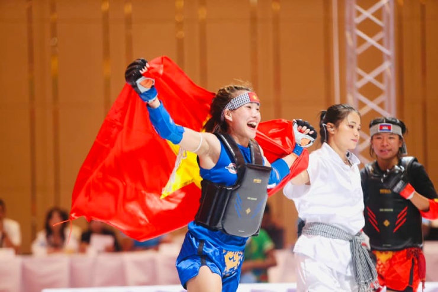
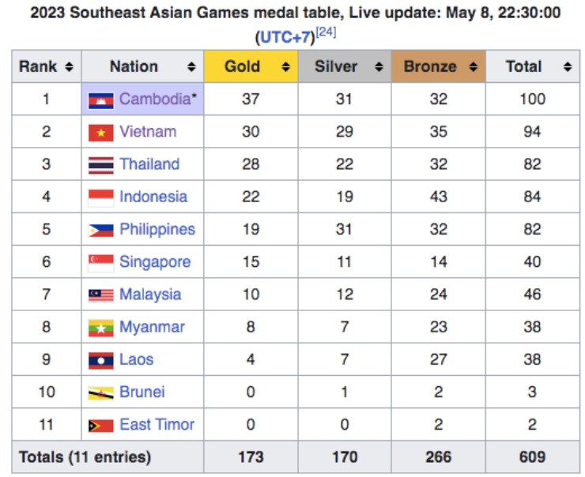

Việt Nam xuất sắc nhất bảng xếp hạng SEA Games ngày 8/5
Sự kiện: Thể thao Đoàn thể thao Việt Nam
(Tin thể thao, tin SEA Games) Việt Nam trở thành đoàn thể thao thi đấu đạt
hiệu quả cao nhất SEA Games 32 ngày 8/5.
Video KHOẢNH KHẮC XÚC ĐỘNG TẠI SEA GAMES 32: Tấm HCV lịch sử và khoảnh
khắc hàng triệu con tim vỡ òa.
Việt Nam thi đấu hiệu quả nhất SEA Games ngày 8/5
Trong 4 đoàn
thể thao thường xuyên
nằm trong top đầu các kỳ Đại hội Thể thao Đông Nam Á (SEA Games), Việt Nam
có phần khởi đầu chậm tại SEA Games 32. Khi các đối thủ đều giành HCV
trong ngày trao huy chương đầu tiên (4/5) thì
Việt Nam chỉ có 3 HCĐ và xếp hạng 7 trên tổng số 11 đoàn.

Việt Nam cùng Thái Lan có cơ hội vươn lên chiếm ngôi đầu ngày 9/5
Ngày thi đấu 9/5 có 42 bộ huy chương được trao, trong đó điền kinh và bơi
đều có 8 nội dung tranh HCV, xếp sau là vovinam (7 HCV), TDDC (6 HCV).

Ở 4 nội dung có nhiều cơ hội đoạt HCV nhất, Campuchia chỉ thực sự mạnh
vovinam, trong khi Việt Nam có thể giành nhiều HCV từ 4 nội dung nói
trên, còn đoàn Thái Lan cũng là
một đối thủ đáng gờm.
Phân tích như trên để thấy rằng, cả Việt Nam, Thái Lan đều có cơ hội
vượt qua Campuchia, đứng đầu bảng xếp hạng huy chương SEA Games 32.
Nhưng sức mạnh của đoàn Campuchia tại sự kiện năm nay rất tiềm ẩn, họ
có hơn 1.000 VĐV tham dự 36 môn thi đấu, vì thế không để đánh giá thấp khả năng chủ nhà từ nay đến ngày bế
mạc. Nhất là khi Campuchia có nhiều VĐV nhập tịch đua tài tại kỳ đại hội
lần này.